Welcome to Nebula Flights, you're gateway to the
galaxy. Looking to explore new star systems or revisit old favorites?
With Nebula Flights, you can book your passage to the
most iconic and exotic planets in the galaxy. From bustling cityscapes
to remote outer-rim territories, your next adventure is just a
hyperjump away! Explore the Galaxy Like Never Before Whether it's your
first trip or you're a seasoned traveler,
Nebula Flights offers unique travel experiences to
the galaxy's most sought-after destinations. Walk the sands of
Tatooine, wander the forest moon of Endor, or feel the pull of the
Force on Dagobah. The galaxy is yours to discover.
Why Travel with Nebula Flights? At
Nebula Flights, we take pride in offering seamless
interplanetary travel, ensuring you experience the galaxy's wonders
like never before. With a fleet of state-of-the-art starships, the
finest travel guides, and tailored itineraries, we provide an
unparalleled travel experience for all beings—from Core Worlds
elites to Outer Rim adventurers.
Your next adventure is waiting. Whether you're on a quest for
adventure, relaxation, or discovery, Nebula Flights is here to make it
happen.
Ready to book your trip?